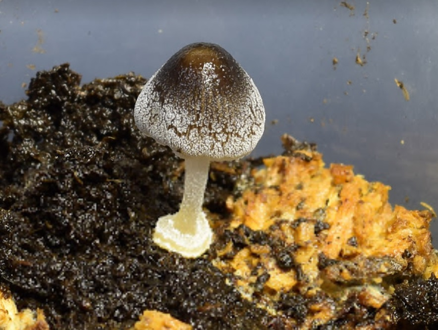

Jie-Hao Ou
Email: allenstorm2005@gmail.com
Mycologist
- Education
-
2009-2012 B.S., Dept. of Plant Pathology, National Chung Hsing University
2012-2014 M.S., Dept. of Plant Pathology, National Chung Hsing University
2014-now Ph.D.,Dept. of Plant Pathology, National Chung Hsing University
- Skills
-
Mycology & Plant Pathology
Fungi imperfecti, Rice disease, Termitomyces, Mushroom cultivation
Bioinformatics
Phylogeny reconstruction algorithms, Seqeuences aligment/assembly, Instance segmentation (Mask-RCNN)
Programming
PHP(+++), HTML(+++), Python(++), JAVA(+), PASCAL(+)
Others
3D printing/Fusion 360(+++), Linux (+++), Single-board microcontrollers/computer (++), Meteorological data analysis (GFS/WRF forecasting model) (++)
- Research interests
-
Fungal taxonomy
Cultivation of Mycena chlorophos
-

Cultivation of O. formosanus and T. microcarpus
Time-lapse photography for educational purpose
- Ongoing project
-
Web-based database of rice seed-borne fungi
Colony and Conidia recognition (Mask-RCNN)

Discolored rice grain counter (Mask-RCNN)
- Recent works